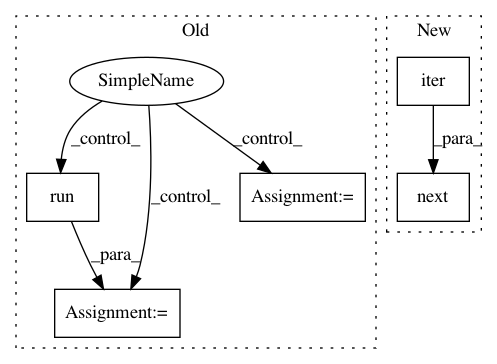

1e84cededb34347e5fd3a169b824020606f36d6c,tensorflow_datasets/core/dataset_utils.py,,dataset_as_numpy,#Any#Any#,108
Before Change
for ds_iter, ds_el in zip(ds_iters, flat_ds):
if ds_iter is None:
// Tensor
np_el = sess.run(ds_el)
else:
// Dataset
np_el = _graph_dataset_iterator(ds_iter, graph)
flat_np.append(np_el)
// Nest
return tf.contrib.framework.nest.pack_sequence_as(nested_ds, flat_np)
After Change
// Merge the datasets iterators and np array
iter_ds = iter(ds_iters)
iter_array = iter(np_arrays)
flat_np = [
next(iter_ds) if _is_ds(ds_el) else next(iter_array)
for ds_el in flat_ds
]
// Nest
In pattern: SUPERPATTERN
Frequency: 3
Non-data size: 5
Instances
Project Name: tensorflow/datasets
Commit Name: 1e84cededb34347e5fd3a169b824020606f36d6c
Time: 2019-01-28
Author: epot@google.com
File Name: tensorflow_datasets/core/dataset_utils.py
Class Name:
Method Name: dataset_as_numpy
Project Name: OpenNMT/OpenNMT-tf
Commit Name: 71753922bd63dfa73e3b10c572f73e268b406ae6
Time: 2019-07-05
Author: guillaume.klein@systrangroup.com
File Name: opennmt/tests/model_test.py
Class Name: ModelTest
Method Name: testSequenceToSequenceWithReplaceUnknownTarget
Project Name: OpenNMT/OpenNMT-tf
Commit Name: 71753922bd63dfa73e3b10c572f73e268b406ae6
Time: 2019-07-05
Author: guillaume.klein@systrangroup.com
File Name: opennmt/tests/model_test.py
Class Name: ModelTest
Method Name: testSequenceToSequenceWithGuidedAlignment